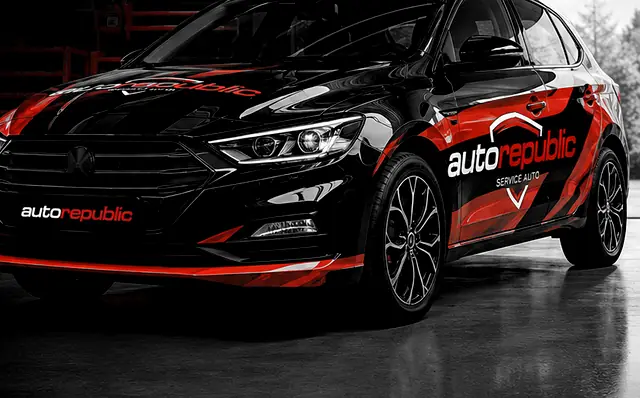

Servicii sezoniere
De două ori pe an mașina are nevoie de o verificare potrivită sezonului. O facem la o singură vizită, ca să pleci liniștit la drum.

Octombrie – martie
Pregătește mașina de iarnă
Verificăm tot ce contează la frig, la o singură vizită.
- Schimb anvelope de iarnă
- Testul bateriei
- Verificarea sistemului de încălzire
- Frâne și schimbul lichidului de frână
- Protecție anticorozivă pentru partea inferioară
- Lichid de parbriz pentru iarnă
Aprilie – septembrie
Pregătește mașina de vară
Aer rece, motor răcit corect și caroserie protejată de soare.
- Schimb anvelope de vară
- Testarea și verificarea aerului condiționat
- Verificarea și completarea lichidului de răcire
- Testul bateriei
- Ștergătoarele de parbriz
- Spălare completă și protecție pentru caroserie
Întrebări frecvente
Când e bine să pregătesc mașina de iarnă?
În octombrie sau la începutul lui noiembrie, înainte de primele înghețuri și de coada de la anvelope.
Cât durează verificarea sezonieră?
De obicei 1–2 ore, cu schimbul de anvelope inclus. Dacă găsim ceva de reparat, îți spunem și decizi tu.
Programează-te în 2 minute
Alegi lucrarea, ziua și ora. Te sunăm ca să confirmăm.